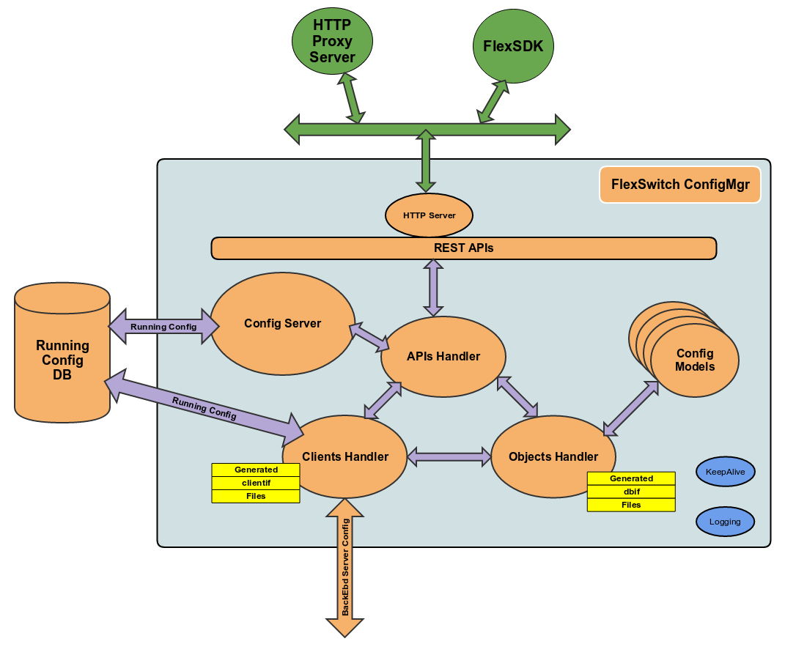

Config Manager¶
ConfigMgr module in SnapRoute network protocol suite is responsible for providing RESTful APIs service to manage different features and functionalities. It accepts the API calls and talks to backend servers to process the request.
Architecture¶
Server package is responsible for initializing ConfigMgr and other sub-packages. It also serves API calls for SystemStatus and SystemSwVersion objects. Clients package is responsible for establishing thrift connections to all backend servers. It keeps on retrying for ever If connection to backend server can not be established. Objects package is responsible for initializing objects that Apis package uses to serve REST calls. Apis package processes the Create, Update, Delete, and Get calls for all the objects supported in SnapRoute network protocol suite.
ConfigMgr Design¶
ConfigMgr runs as confd daemon. main() function initializes logging level for confd and then initializes server sub-package by calling NewConfigMgr method.
configMgr := server.NewConfigMgr(paramsDirName, logger)
paramsDirName is the path where json configuration files are present. logger is the logging handles that was returned when NewLogger() function was invoked to initialize logging. main() function initializes KeepAlive sub-module for confd. KeepAlive runs as a go routine which periodically sends out keepalive message to system daemon. After server sub-package initialization is done, main function gets the http port and REST routes to serve and waits for http request for REST APIs by calling ListenAndServe method from http package.
Server Sub-Package¶
Server sub-package operates on ConfigMgr object -
ConfigMgr struct {
logger *logging.Writer // Logger handle
dbHdl *objects.DbHandler // Handle for DB operations
bringUpTime time.Time // When confd came up. This is used for system up time
swVersion SwVersion // Software version running
ApiMgr *apis.ApiMgr // Handle for apis sub-package object
clientMgr *clients.ClientMgr // Handle for clients sub-package object
objectMgr *objects.ObjectMgr // Handle for objects sub-package object
cltNameCh chan string // Channel to receive name of the connected backend server
}
ConfigMgr object is initialized in NewConfigMgr function.
Other functions implemented in server sub-package are -
func GetSystemStatus() models.SystemStatusState
This function handles SystemStatus Get call.
func GetSystemSwVersion() models.SystemSwVersionState
This function handles SystemSwVersion Get call.
func (mgr *ConfigMgr) SigHandler()
This function waits for OS signal. Right now, if SIGHUP is received then confd daemon is brought down.
func (mgr *ConfigMgr) DiscoverPorts() error
This function queries asicd to get all the ports present. Then it stores the Port objects in DB that can be updated by calling Port API. When ConfigMgr comes up and connects to asicd, this function is called.
func (mgr *ConfigMgr) InitalizeGlobalConfig(paramsDir string)
This function initializes global configuration objects of all modules and stores in DB with default values set. Global config objects can only be updated.
Clients Sub-Package¶
Clients sub-package operates on ClientMgr object -
type ClientMgr struct {
logger *logging.Writer // Logger handle
Clients map[string]ClientIf // Handles for all backend servers
reconncetTimer *time.Ticker // Timer to retry connection to backend server if failed
systemReady bool // A flag saying if system is ready
systemStatusCB SystemStatusCB // Call back function to get SystemStatus
systemSwVersionCB SystemSwVersionCB // Call back function to get SystemSwVersion
}
Any backend server that wants to connect to ConfigMgr should implement ClientIf interface.
type ClientIf interface {
Initialize(name string, address string)
ConnectToServer() bool
IsConnectedToServer() bool
CreateObject(obj models.ConfigObj, dbHdl *dbutils.DBUtil) (error, bool)
DeleteObject(obj models.ConfigObj, objKey string, dbHdl *dbutils.DBUtil) (error, bool)
GetBulkObject(obj models.ConfigObj, dbHdl *dbutils.DBUtil, currMarker int64, count int64) (err error, objcount int64, nextMarker int64, more bool, objs []models.ConfigObj)
UpdateObject(dbObj models.ConfigObj, obj models.ConfigObj, attrSet []bool, op string, objKey string, dbHdl *dbutils.DBUtil) (error, bool)
GetObject(obj models.ConfigObj, dbHdl *dbutils.DBUtil) (error, models.ConfigObj)
ExecuteAction(obj models.ConfigObj) error
GetServerName() string
}
All these interface methods can be auto generated using codegen tools described in reltools repository.
Apis Sub-Package¶
Apis sub-package initializes the REST routes for APIs supported on all the objects and serves all REST API requests. It operates on ApiMgr object -
type ApiMgr struct {
logger *logging.Writer // Logger handle
objectMgr *objects.ObjectMgr // Handle to objects sub-package manager
dbHdl *objects.DbHandler // Handle for DB
apiVer string // API version string
apiBase string // Common string in the REST call
apiBaseConfig string // Config API base string
apiBaseState string // State API base string
apiBaseAction string // Action API base string
pRestRtr *mux.Router // REST router
restRoutes []ApiRoute // REST routes
ApiCallStats ApiCallStats // Stats for API calls
}
Create, Update, and Delete APIs are supported for configuration objects. Get APIs are supported for status objects. Type of the object, whether configuration or status, is identified by ACCESS tag in object model.
Every object model should define which element(s) is(are) key by adding a KEY tag. Delete, Update, or Get calls should provide the key element(s) in the REST API call. When a Create call is made for a configuration object, response includes an object identifier. That object identifier can be used to make Delete, Update, or Get calls without providing key element(s).
Objects Sub-Package¶
Objects sub-package initializes objects for which REST APIs are supported. It operates on ObjectMgr object.
type ObjectMgr struct {
logger *logging.Writer // Logger handle
ObjHdlMap map[string]ConfigObjInfo // All the objects
clientMgr *clients.ClientMgr // Handle to clients sub-package manager
}
Authentication and Encryption¶
ConfigMgr listen to only http requests. For user authentication and TLS/SSL encryption of REST APIs request and response, an http proxy server can be enabled on the switch that will pass through all http calls to the port on which ConfigMgr is serving.
NGINX as proxy server is recommended.